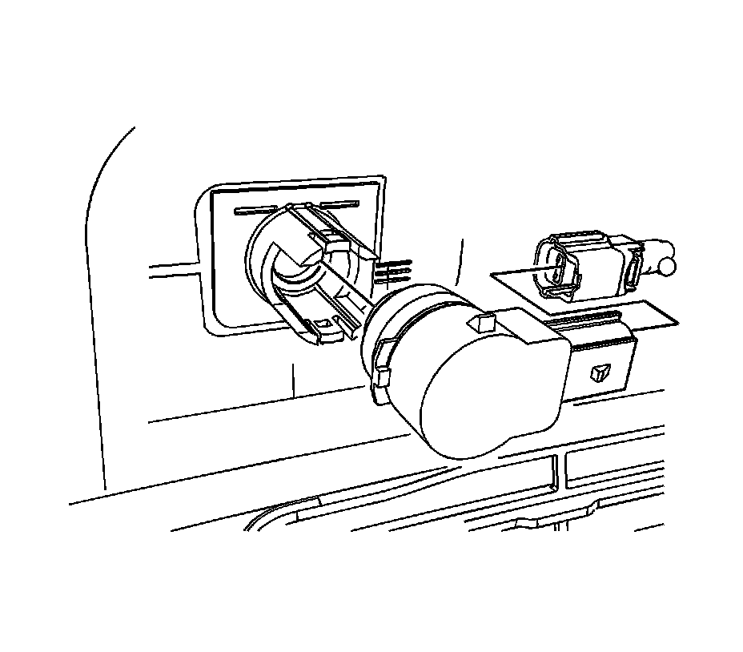
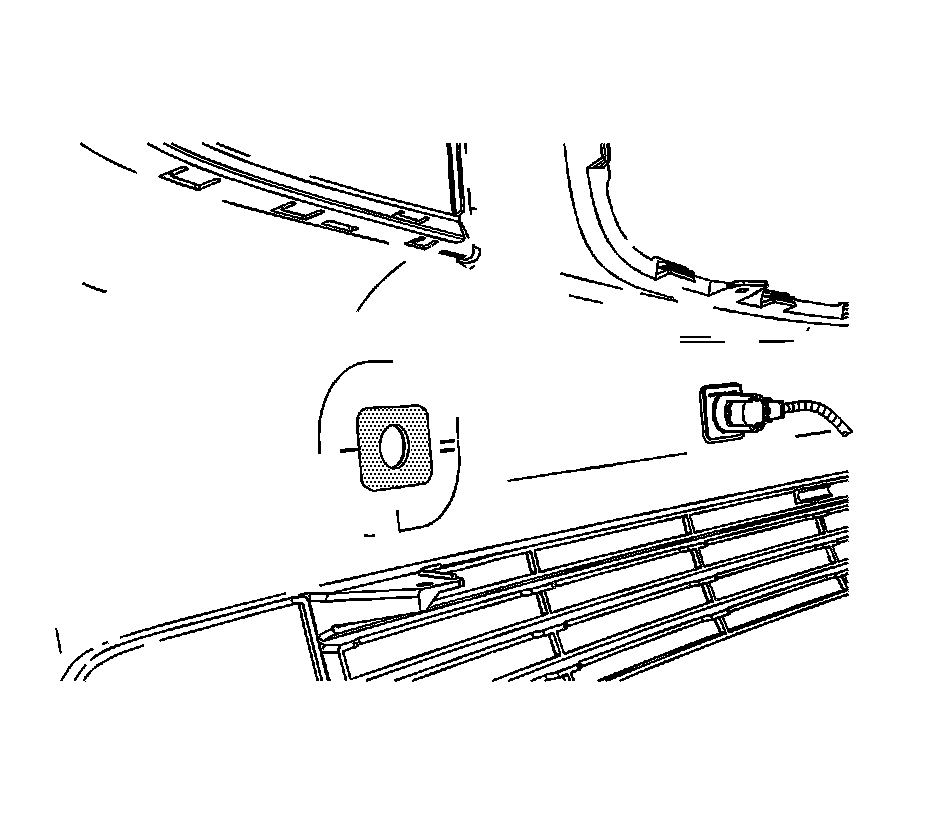
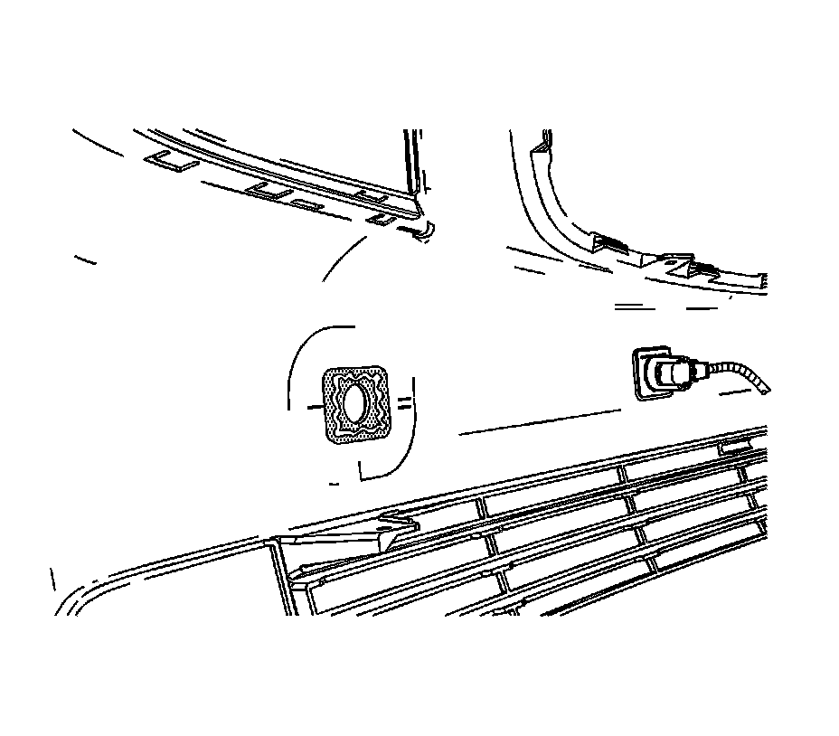
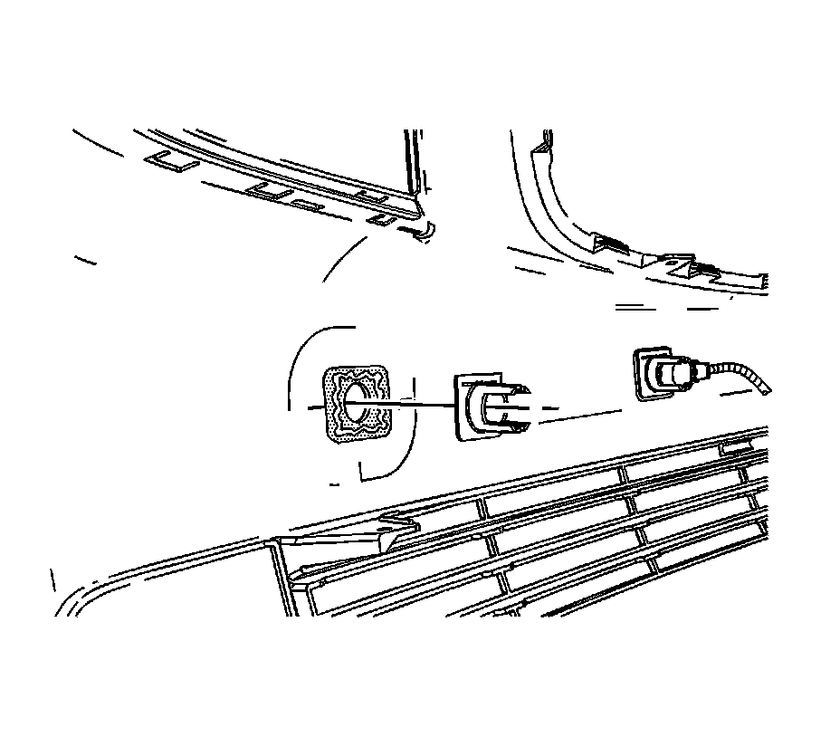

Rear Object Sensor Housing Replacement
REAR OBJECT SENSOR HOUSING REPLACEMENT
1. Remove the rear fascia.

2. Disconnect the sensor harness.
3. Remove the sensor from the sensor housing. The sensor housing must be painted if replaced. If reinstalled, painting will not be necessary.
4. IMPORTANT: Do Not grind off alignment tabs.

Sand/grind sonic weld plastic residue from the fascia.

5. Apply structural adhesive epoxy, Lord Fusor(TM) 127EZ or equivalent, to fascia at mating surface.

6. Using the alignment tabs, install the sensor housing to the fascia.
7. Allow adhesive to cure according to manufacturer's directions.
8. Install the sensor to the sensor housing.
9. Connect the electrical harness.
10. Install the rear fascia.